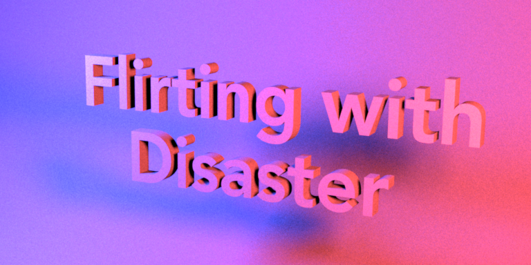

**Programming Assignment 4 - Hao Sun**
Feedback
========
* I spent seven hours on this assignment totally, including 3 hours for part 1-2, 3 hours for part 3-4, and one hour for report.
Part 1-2: Area lights and Distribution Ray Tracing
===========================
* One thing that is important is that actually $ G(x \leftrightarrow y) $ includes the cosine term, so we don't need to add it in $ L_e(y, y \to x) $.
* Another issue is that we have two light sources now.
We need to calculate $ \int_{\mathcal{L}_1 \cup \mathcal{L}_2} L_r dy = \int_{\mathcal{L}_1} L_r dy + \int_{\mathcal{L}_2} L_r dy $. The simplest method is to sample $ \mathcal{L}_1 $ and $ \mathcal{L}_2 $ seperately, however, this makes two samples in one ray. If we have many emitters, it will sample much more than what we want. My choice is to sample one point from $ \mathcal{L}_1 $ with probability $ p_1 $ and sample one point from $ \mathcal{L}_2 $ otherwise, let's say with probability $ p_2 $. It's clear that $ p_1 + p_2 = 1 $, and as long as we divide the result by the probability of the emitter for every sample point, we can get correct results. This is equal to what we do sampling on one emitter mesh.
To sample on the two emitters fairly, $ p_1 : p_2 = Area(\mathcal{L}_1) : Area(\mathcal{L}_2) $. Area of a emitter is reciprocal of probability density of the emitter, which we need to use in this part.

Part 3-4: Dielectrics and Whitted-style ray tracing
===================================================
* In dielectrics bsdf, one important thing is to check the side where the light is coming from. The light can be go into the dielectrics body or go outside.
* Another interesting thing is that, although Nori gives emitters a diffusion bsdf, we can just return pure black when the ray hits an emitter.
Firstly, we don't account indirect illumination in this assignment, so we don't need to calculate $ L_e $ term now. We can find that we can't see the light on the balls in reference image of cbox, which should appear if we calculate $ L_e $ term.
Secondly, the two emitters are too close to each other, and the two emitters are plane. So if we calculate $ L_i $ term on emitter mesh, we have a big problem about precision.